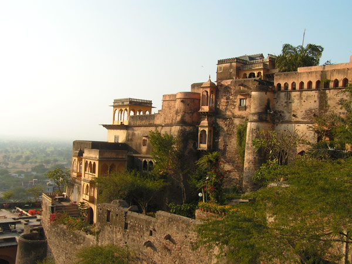

Haryana (Hindi: Hariyāṇā, pronounced [ɦəɾɪːˈaːɳɑɐː]) is a state located in the northwestern part of India. It
was carved out after the linguistic reorganisation of Punjab on 1 November 1966. It is ranked 21st in terms of
area, with less than 1.4% (44,212 km2 or 17,070 sq mi) of India's land area. The state capital is Chandigarh,
which it shares with the neighbouring state of Punjab; the most populous city is Faridabad, a part of the
National Capital Region. The city of Gurgaon is among India's largest financial and technology hubs.Haryana has
6 administrative divisions, 22 districts, 72 sub-divisions, 93 revenue tehsils, 50 sub-tehsils, 140 community
development blocks, 154 cities and towns, 7,356 villages, and 6,222 villages panchayats.
